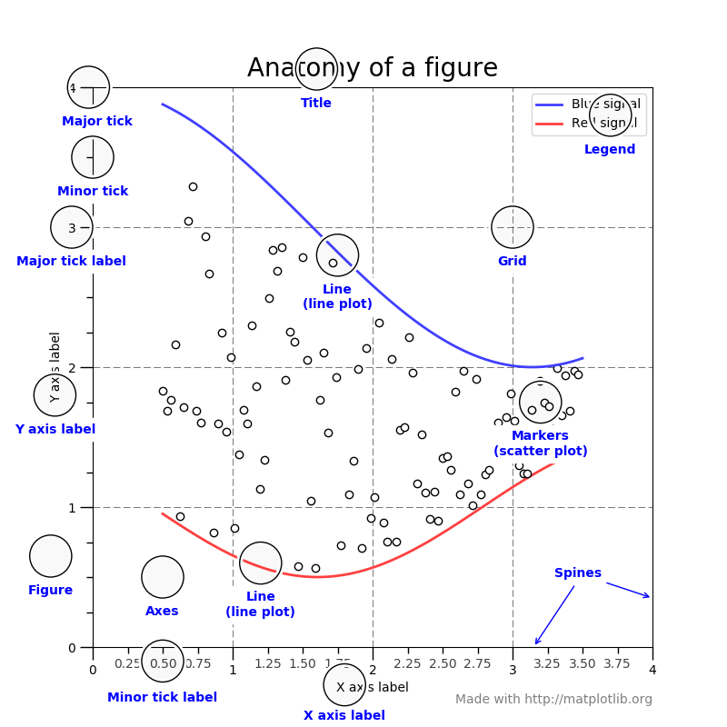

matplotlib
matplotlib是python绘图的一个基础包，其用法和matlab语法有些相似。
大量第三方包扩展并构建了Matplotlib功能，包括几个较高级别的绘图接口(seaborn、holoviews、ggplot 等)，以及两个投影和绘图工具包(basemap和cartopy)
这里总结一些基本用法
1.matplotlib.pylab
2.matplotlib.pyplot

import matplotlib.pyplot as plt
plt.plot(x, y, 其他属性)
pyplot是matplotlib中最常用的模块，
常用的图形参数设置
| 命令 | 功能 |
|---|---|
| axis([xmin, xmax, ymin, ymax]) | 设置坐标轴范围 |
| plot(x, y1,属性, y2, 属性) | 绘制线图 |
| title | |
| xlabel, ylabel | 横纵坐标轴的标签 |
| text(x, y, 文字) | 添加文字描述 |
| annotate('注释', xy=(2, 1), xytext=(3, 1.5) | 添加箭头注释 |
| plt.yscale('linear’) # linear, log, logit | 更换坐标轴刻度 |
subplot 绘制子图
plt.figure()
plt.subplot(2, 3, 1) #n行m列的子图
plt.plot(x1, y1)
plt.subplot(2, 3, 2) #n行m列的子图
plt.plot(x2, y2)
data = np.random.randn(2, 100)
fig, axs = plt.subplots(2, 2, figsize=(5, 5))
axs[0, 0].hist(data[0])
axs[1, 0].scatter(data[0], data[1])
axs[0, 1].plot(data[0], data[1])
axs[1, 1].hist2d(data[0], data[1])
plt.show()
显示图像，读取图片
需要先安装pillow包
im = plt.imread('cat.jpg') #将图像读取为数组
ax.imshow(im) # imshow将数组显示为图像
plt.colorbar() # 可以添加颜色条
3d绘图
mplot3d
多条曲线设置不同颜色
正常情况下，matplot是自动变更绘制的颜色的
import matplotlib.pyplot as plt
import numpy as np
x = np.linspace(0, 1, 10)
for i in range(1, 6):
plt.plot(x, i * x + i, label='$y = {i}x + {i}$'.format(i=i))
plt.legend(loc='best')
plt.show()
如果需要自己指定颜色，可以通过设置color=xxx来设置。
如果数据中有标签分组，希望分组设置相同的颜色，但是组数比较多，不太好事先指定好颜色，则可以通过如下的方法
import matplotlib.pyplot as plt
import numpy as np
x = np.linspace(0, 1, 10)
number = 5
cmap = plt.get_cmap('gnuplot')
colors = [cmap(i) for i in np.linspace(0, 1, number)] # 挑选number种颜色
for i, color in enumerate(colors, start=1):
plt.plot(x, i * x + i, color=color, label='$y = {i}x + {i}$'.format(i=i))
plt.legend(loc='best')
plt.show()
绘制次坐标轴图
fig = plt.figure()
ax1 = fig.add_subplot(111)
ax1.plot(x, y1)
ax1.set_ylabel('Y1')
ax2 = ax1.twinx() # this is the important function
ax2.plot(x, y2, 'r')
ax2.set_ylabel('Y2')
plt.show()
3. 绘制案例
常用的图像类型 https://www.matplotlib.org.cn/tutorials/introductory/sample_plots.html
1 绘制随时间动态变化的散点图
想要得到动画效果的图像，就是让多幅图连续播放，所以需要不断修改图中曲线的属性。首先需要了解下面像对象编程，在matplotlib中我们调用的任何函数，都会返回一个对象的实例。所以可以通过修改其相应的属性来改变曲线。比如常见的设置title，xlim等
plt.plot(x, y); plt.title('plot title')
主要用到的函数
FuncAnimation(fig, func, frames=None,fargs=None)
FuncAnimation的参数比较多，这里只列举出最重要的四个。
- fig: 指得是目前曲线所在在的figure。
- func: 这个函数主要是修改lines的属性，并返回。
- frames: 这是func参数中，跟每一帧相关的参数，靠它曲线才会发生变化。动画长度，一次循环包含的帧数
- fargs： 对应func中其他参数。
- interval 更新频率，以ms记
- blit: 选择更新所有点，还是仅更新产生变化的点。
- 可选参数 repeat，指定是否循环动画
官网的一个案例
https://matplotlib.org/gallery/animation/simple_anim.html
模仿写的一个小例子 https://www.smslit.top/2018/11/12/matplotlib-animation/
import numpy as np
import matplotlib.pyplot as plt
from matplotlib import animation
def plot_trace_animation(x, y):
fig, ax = plt.subplots()
plt.xlim(min(x), max(x))
plt.ylim(min(y), max(y))
line, = ax.plot(x[0], y[0])
def init(): # only required for blitting to give a clean slate.
line.set_ydata([np.nan] * len(x))
return line,
def update(i):
print(i)
line.set_xdata(x[:i])
line.set_ydata(y[:i])
#scat.set_data(x[:i], y[:i])
return line,
anim = animation.FuncAnimation(fig, update, init_func=init,frames=10, interval=100)
plt.show()
#anim.to_html5_video()
#anim.to_jshtml()
anim.save('out.mp4') # 需要先安装ffmpeg
x = range(1, 11)
y = range(5, 15)
plot_trace_animation(x, y)
保存
anim.save('out.mp4') # 需要先安装ffmpeg
anim.save的 save 方法可以指定 writer ，这里要保存 gif 默认选择的 writer 为 pillow ，所以需要安装 pillow 库：
$ pip3 install pillow
按照如下调用方法即可保存动画为 gif，这里保存动画的帧数是受 animation.FuncAnimation 的 frames 和 save_count 影响的：
ani.save('animation.gif', writer='pillow')
4. 问题
Q1: RuntimeWarning: More than 20 figures have been opened. Figures created through the pyplot interface (matplotlib.pyplot.figure) are retained until explicitly closed and may consume too much memory.
很多时候绘图的时候数量会比较多，一般是写个循环然后绘图。这时候定义的绘图函数就会执行很多次的plt.subplot() 即创建很多新的。可以在一开始或者初始化的时候就直接创建一张，然后后续的图都基于此改就好了，这样可以提升运行速度。
参考
query文本聚类
- 是不是cache问题tf-idf
- 添加下降维的步骤
- 稀疏矩阵
- 数据切分更小li'du
- Mini Batch KMeans http://www.dataivy.cn/blog/%E9%80%82%E5%90%88%E5%A4%A7%E6%95%B0%E6%8D%AE%E7%9A%84%E8%81%9A%E7%B1%BB%E7%AE%97%E6%B3%95mini-batch-k-means/
实验全量的
http://yq01-tianqi-spark-yarn00.yq01.baidu.com:8388/proxy/application_1511855101950_42074/
全量
前期构造词频矩阵：
1.生成原始的词频矩阵
- http://spark.apache.org/docs/latest/ml-features.html#countvectorizer
examples/src/main/python/sql/basic.py
输入数据：每行是切分好的term
spark = SparkSession.builder.appName("CountVectorizerExample").getOrCreate()
sc = spark.sparkContext
# $example on$
# Input data: Each row is a bag of words with a ID.
lines = sc.textFile("/user/ubs/kce/zhenzhen/spark/test_data/corpus_title2")
parts = lines.map(lambda l: l.split('#')) # convert all the term to a list
termRDD = parts.map(lambda p: Row(tid=p[0], words=p[1].split(' ')))
df = spark.createDataFrame(termRDD)
# fit a CountVectorizerModel from the corpus.
cv = CountVectorizer(inputCol="words", outputCol="features")
#, vocabSize=3, minDF=2.0)
model = cv.fit(df)
result = model.transform(df)
2.tf-idf
- http://spark.apache.org/docs/latest/mllib-feature-extraction.html#tf-idf
- http://spark.apache.org/docs/latest/ml-features.html#feature-extractors
ml中的函数比mllib中的多
examples/src/main/python/mllib/tf_idf_example.py
~/zhenzhen/spark_study/spark/examples/src/main/python/mllib $ pyspark zzz_tf_idf_example.py
3.降维
4.直接聚类
# pyspark这个默认是启动的集群任务，之前测试的本地数据会出错，脚本中需把输入目录改成集群路径
~/zhenzhen/spark_study $ pyspark kmeans.py > log.test
六神合体
- 词频矩阵+tfidf
http://www.zengyilun.com/spark-similarity/
上述所有步骤(tfidf，降维,聚类)合并在一起
# pyspark这个默认是启动的集群任务，之前测试的本地数据会出错，脚本中需把输入目录改成集群路径
~/zhenzhen/spark_study $ pyspark tfidf_kmeans.py > log.test
这个测试ok，但是中心点都是0，应该是数据问题
Copyright © 2015 Powered by MWeb, Theme used GitHub CSS.